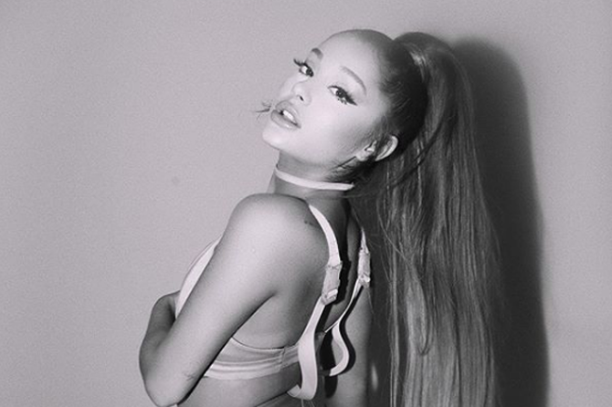

карьера
Творческая биография Арианы Гранде развивалась стремительно. В 14 лет девушка прошла кастинг в бродвейский мюзикл Джейсона Брауна «13». Режиссер доверил ей роль Шарлотты. За эту работу актриса заслужила свою первую престижную награду – премию Национальной молодежной театральной ассоциации. Первый музыкальный альбом звезды вышел, едва ей исполнилось 18 лет. Он получил название Put Your Hearts Up. Диск оказался невероятно популярным у молодежи Америки и привлек к артистке еще большее внимание. 2013 год стал для вокалистки удивительно щедрым. Она подарила своим поклонникам сразу 2 студийных альбома – Yours Truly и Christmas Kisses. Голос певицы стал более «взрослым», а мастерство заметно выросло. Вишенкой на торте стало исполнение знаменитого трека Bang Bang, в котором поучаствовали также Джесси Джей и Ники Минаж. Весной 2016 года Ариана Гранде с синглом Dangerous Woman попала в топ-10 наиболее популярных хитов хит-парада Billboard Hot 100. Она сумела стать первой за 57-летнюю историю этого чарта певицей, чьи главные синглы из трех альбомов подряд вошли в первую десятку топа. Песней Side to Side Ариана Гранде рекламировала свой новый альбом Dangerous Woman, который выпустила в конце 2016 года. К ноябрю 2018 года был готов сингл Thank U, Next, который впоследствии подарил свое название новой пластинке. Трек стартовал с первой позиции Billboard Hot 100, а певице было присвоено звание «Женщина года». В начале 2019 года стартовал релиз хита 7 Rings, а сам альбом увидел свет через месяц. Он оказался на первой строчке чарта Billboard 200. Кроме того, наградой «Грэмми» был отмечен предыдущий альбом Гранде Sweetener. В 2020 году Гранде представила хит Rain On Me, который исполнила вместе с Леди Гагой. Песня удостоилась премии «Грэмми» за лучшее поп-исполнение дуэтом. В другом новом треке «34+35» артистка использовала каламбур сексуального характера. Композиция вошла в шестой сольный альбом певицы Positions.
